Height Enforcement Pass
All images cropped to under 1000px. Review each and reply with the number for feedback.
Article: How to Create Custom Statuses
1. statuses-nav-pipeline 994px was 1064px
Sidebar + leads table with Status column. No cursor.
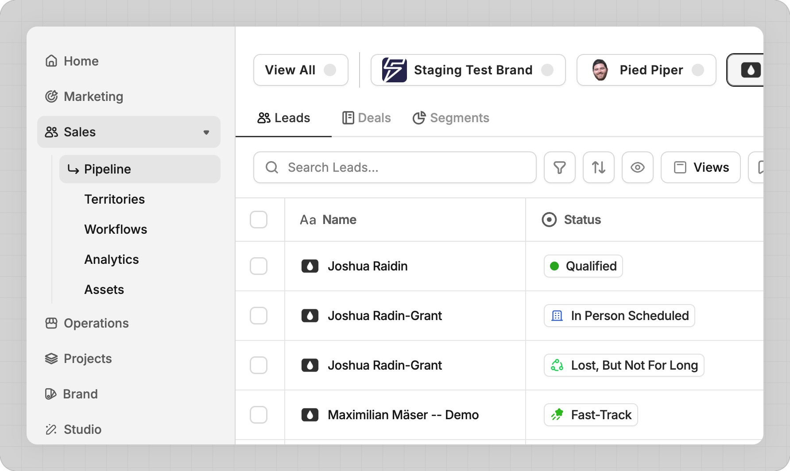
2. statuses-change-from-table 994px was 1224px
Table with Change Status dropdown open. Hand cursor on Qualified green dot.
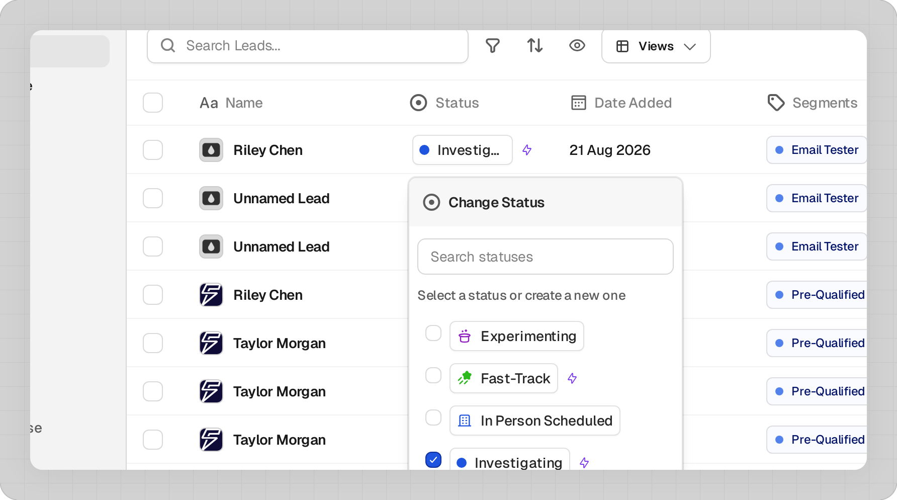
3. statuses-change-from-detail 994px was 1344px
Lead detail with Change Status dropdown. Hand cursor on Qualified badge.
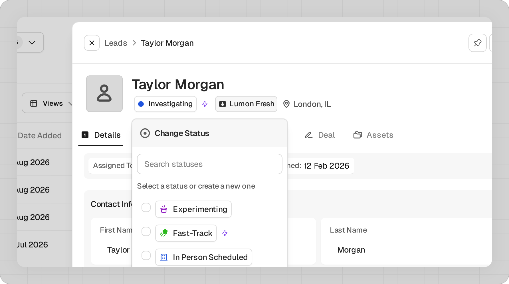
4. statuses-create-form 574px was 1846px, now --pair
UPDATED: Side-by-side pair mode. Left: form with icons. Right: color picker. Full 1800px width.
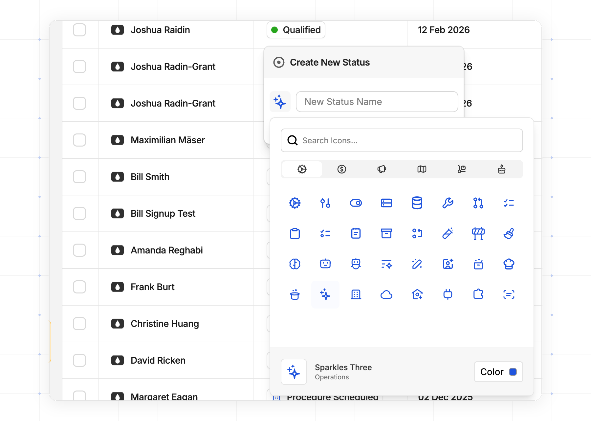
Article: How to Assign Leads
5. assign-leads-table 994px was 1504px
Sidebar + leads table with Assigned To column. No cursor.
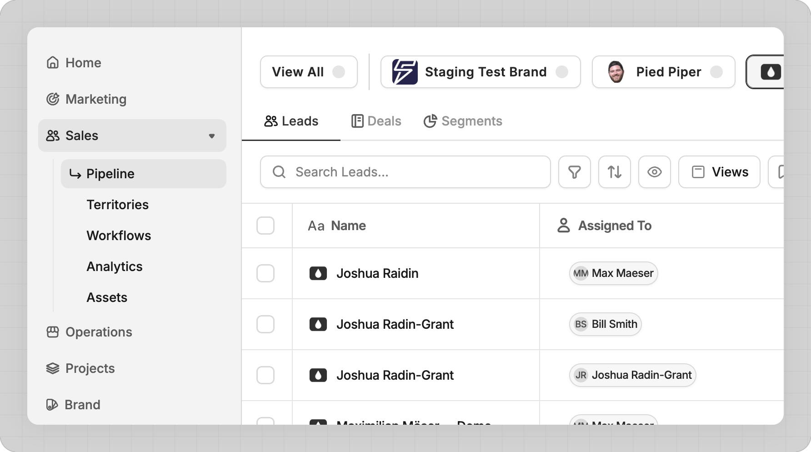
6. assign-leads-dropdown 999px was 1124px
UPDATED: Better crop (y=60) to show more dropdown. Hand cursor added.
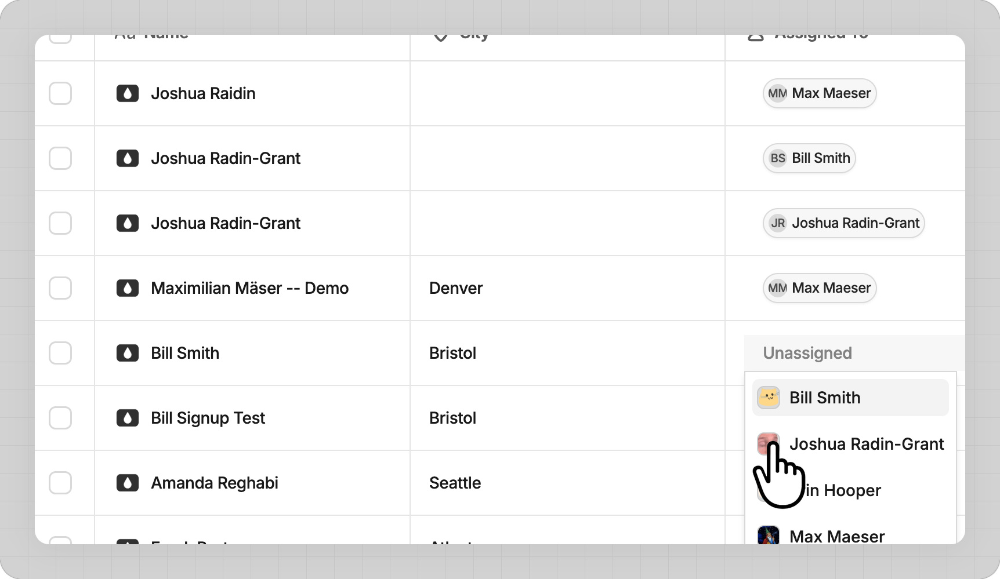
Article: Auto and Manual Assignment
7. assignment-manual-dropdown 984px was 1104px, recaptured
RECAPTURED: Table with Name, City, Assigned To columns. Unassigned dropdown open showing team members.
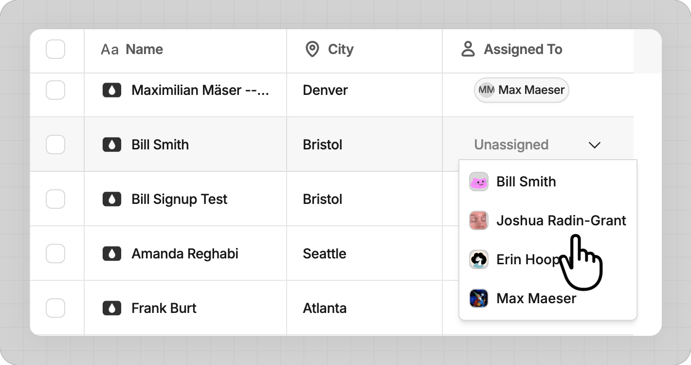
Article: How to Build a Form
8. form-nav-sidebar 994px was 1144px
Sidebar with Forms highlighted. Needs arrow cursor on Forms (missing).
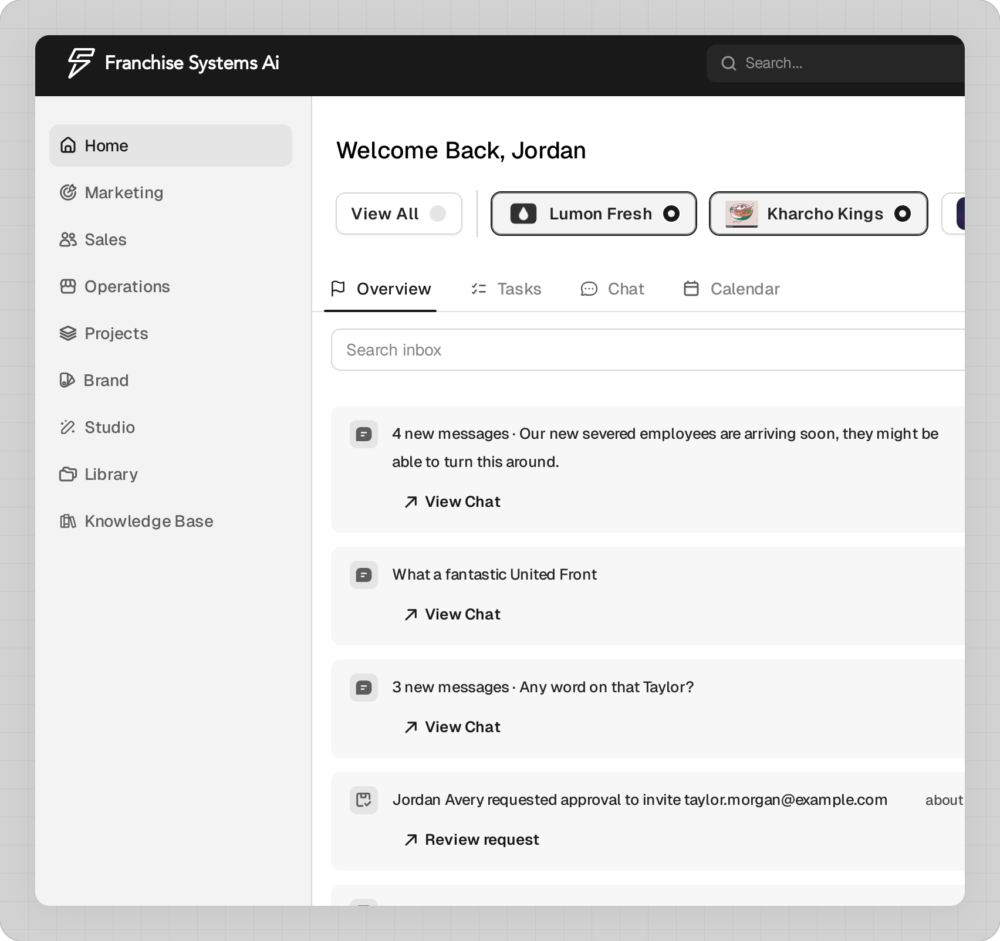
9. form-create-field 994px was 1738px
Create New Field dialog. No cursor. Shows fields through Description label.
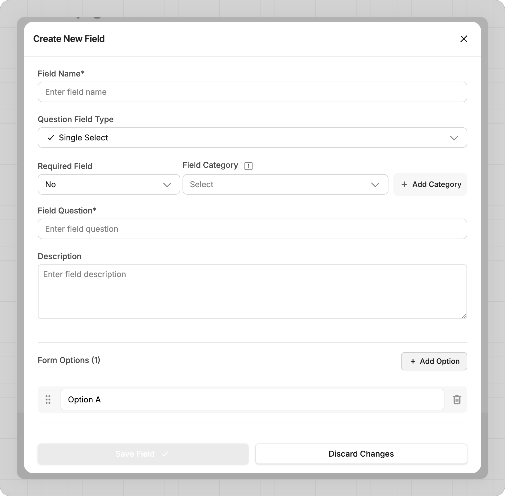
10. form-fields-library 984px was 1464px, recaptured wider
RECAPTURED: Form canvas + Fields Library panel with field cards. Shows builder context.
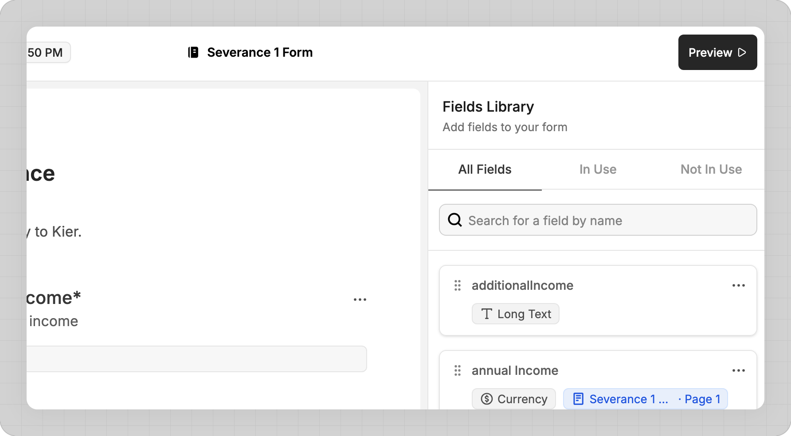
11. form-field-types 994px was 1078px
Field type dropdown open. Needs hand cursor on Dropdown option (missing).
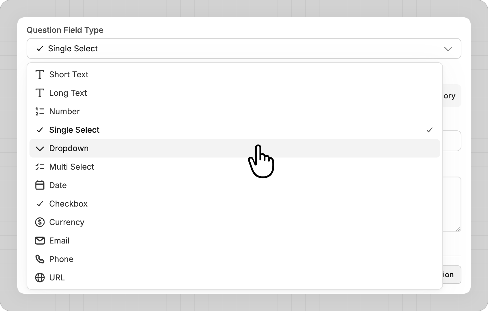
Article: How to Edit Your Portal
12. portal-theme-typography 991px was 1748px
Typography settings showing H1 and H2. No cursor.
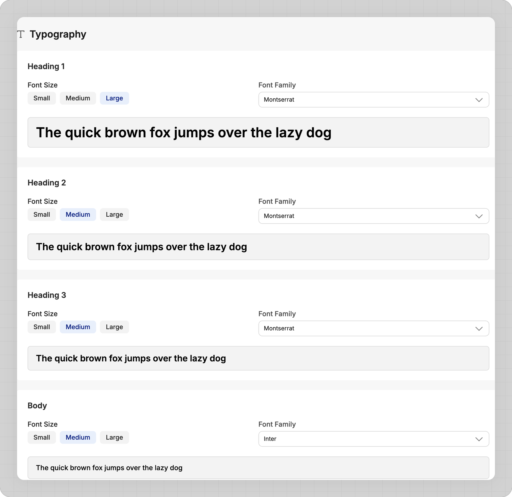
13. portal-theme-colors 995px was 1297px
Theme color picker showing 8 themes (2 rows). Needs hand cursor on Blue (missing).
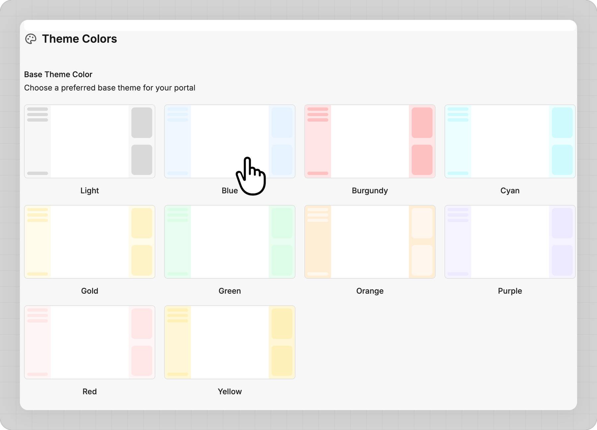
14. portal-hide-toggle 994px was 1244px
Step panel with Hide For Applicants toggle. Cropped from y=250 (lost Step header + Step Title). Needs hand cursor on toggle (missing).
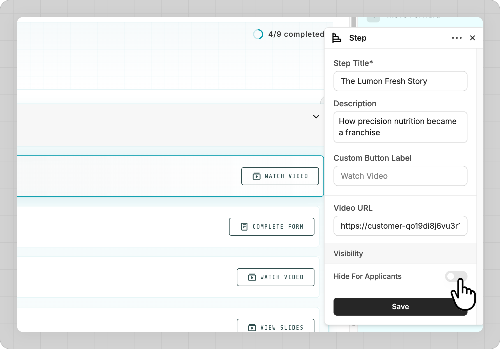
15. portal-add-step 984px was 1164px, recaptured wider
RECAPTURED: Portal steps + Step Action dropdown open showing all 8 options. Wider view.
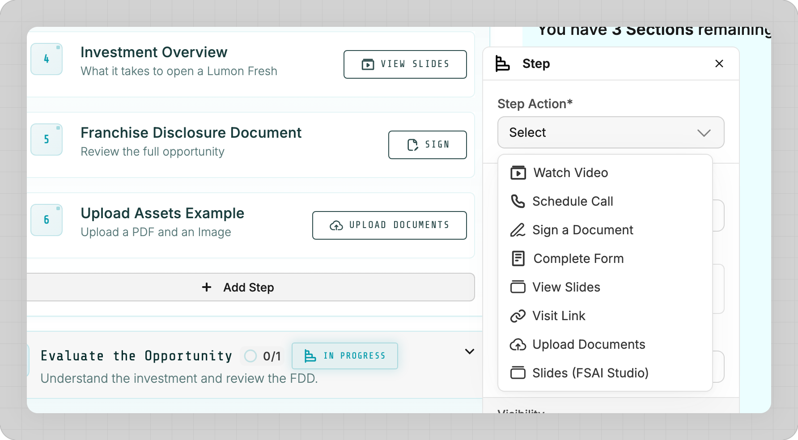